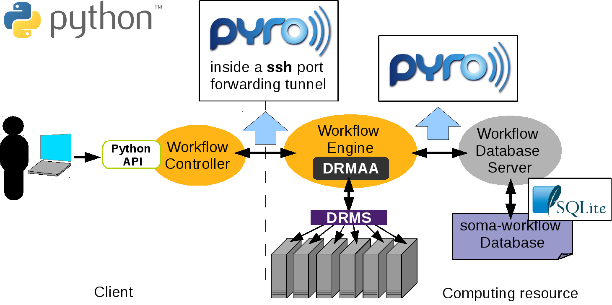
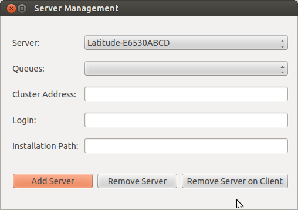
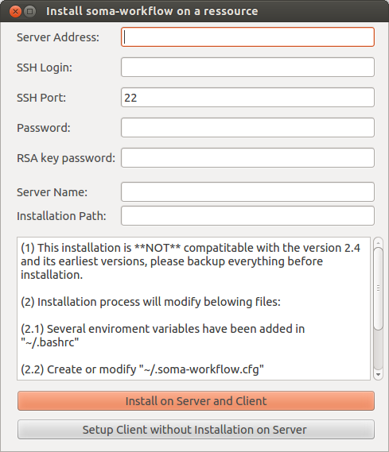

Installation and configuration¶
Installation and Configuration
Mono process application on a multiple core machine¶
No configuration is needed to use Soma-workflow on a multiple core machine.
See Soma-workflow main page for installation.
Client-server application: Client¶
This page describes the installation and configuration of the Soma-workflow client.
Requirements¶
- Python version 2.5 or more
- Pyro version 3.10 or more
- Paramiko version 1.7 or more. Paramiko in only required if the computing resource is remote.
- For the GUI: Qt version 4.6.2 or more, PyQt version 4.7.2 or more, or PySide version 1.1.1 or more and optionally matplotlib version 0.99 or more
Installation¶
Download: soma-workflow
Installation:
$ sudo python setup.py install or $ python setup.py install --prefix my_directory
Start the GUI with the command soma_workflow_gui and/or import the soma_workflow.client module to use the Python API.
See also
Graphical User Interface for the GUI documentation, Python API for Soma-workflow Python API documentation and Examples.
Configuration (Created automatically)¶
The configuration syntax is the ConfigParser syntax. The configuration file is located in “$HOME/.soma-workflow.cfg”. This file will be created automatically once a server has been established (see Server installation using “Server Management”).
There is one section for each computing resource (that is for each Soma-workflow database server).
Only four items are required:
- CLUSTER_ADDRESS
- SUBMITTING_MACHINES
- QUEUES
- LOGIN
The two first items are mandatory and the last ones are optional. The values of these configuration items are set up at each Soma-workflow server installation (see Server configuration (Created automatically)). Ask these item values to the Soma-workflow administrator if you did not install the server yourself.
Configuration file example (2 computing resources are configured):
[Titan]
CLUSTER_ADDRESS = titan.mylab.fr
SUBMITTING_MACHINES = titan0
QUEUES = test long
LOGIN = my_login_on_titan
[LabDesktops]
CLUSTER_ADDRESS = mydesktop.mylab.fr
SUBMITTING_MACHINES = mydesktop
Configuration items required on the client side
- CLUSTER_ADDRESS
- Address of the host computing resource host to log on. Address of the host which has to be used to access the cluster remotely.
- SUBMITTING_MACHINES
- Address of the submitting hosts, that is the hosts from which the jobs are supposed to be submitted. In most of the cases, there is only one submitting host. The addresses are local on the cluster. Syntax: “host1 host2 host3”
Configuration items optional on the client side:
- QUEUES
- List of the available queues. This item is only used in the GUI to make easier the selection of the queue when submitting a workflow. Syntax: “queue1 queue2 queue3”
- LOGIN
- To pre-fill the login field in the GUI when login to the resource.
Client-server application: Server¶
This page explains how to configure, install and run the Soma-workflow database server.
In the client-server mode the communication between the processes is done using Pyro. The server is registered on a Pyro name server. The Workflow Engines query the Pyro name server for the location the database server.
Requirements¶
{kind=link}
Here is the list of the server dependencies:
- A distributed resource management system (DRMS) such as Grid Engine, Condor, Torque/PBS, LSF..
- A implementation of DRMAA 1.0 for the DRMS in C
- Python version 2.5 or more
- Pyro version 3.10 or more
- SQLite version 3 or more
The implementations of DRMAA tested successfully with Soma-workflow:
DRMS DRMAA implementation Torque 2.0.0 PBS DRMAA 1.0.13 from http://apps.man.poznan.pl/trac/pbs-drmaa LSF 7.0 FedStage LSF DRMAA 1.0.3 Grid Engine 6.2u5&6 Embeded implementation Condor 7.4.0 Embeded implementation
Server installation using “Server Management”¶
In the menu of soma-workflow, we can see a button called, Server Management. See the menu of the below figure, we can find a “Server Management” button

Opening “Server Management” button, and then we can see three buttons, called: Add Server, Remove Server, Remove Server on Client, as shown in the below figure. Since the configuration is needed for both sides (client and server), “Remove Server” means that remove the installation on the server and client (BE CAREFULL: it will lose all your soma-workflow data on your server and client, $HOME/.soma-workflow and $HOME/.soma-workflow.cfg). “Remove Server on Client” means that it will remove all the data only on client side, while the server side is still running as usual.
{kind=link}
Opening “Add Server” button, we can see a window as shown below:
{kind=link}
Before the server installation, we strongly recommend to use SSH with authentication key instead of password. See “http://askubuntu.com/questions/46930/how-can-i-set-up-password-less-ssh-login”. Otherwise, you need to input password each time. We should setup the Server Address, SSH Login, while the other items are optional. (password is not mandatory when you are using authentication key)
Since the configuration is needed for both sides (client and server), the first button, called “Install on Server and Client”, is used for configuring both sides. Since many clients can connect to one server, “Setup Client without Installation on Server” is used for configurating only client side.
Since soma-workflow is based on the DRMAA on the server side, to make sure that your LD_LIBRARY_PATH contains libdrmaa.so or export DRMAA_LIBRARY_PATH to the absolute path of libdrmaa.so on your server.
Server configuration (Created automatically)¶
This section defines the required and optional configuration items. This file can be found on the both side of client and server with the path “$HOME/.soma-workflow.cfg”.
The configuration file syntax is the ConfigParser syntax. All the configuration items are defined in one section. The name of the section is the resource identifier (ex: “Titan”).
Configuration file example:
[Titan]
DATABASE_FILE = path/soma_workflow.db
TRANSFERED_FILES_DIR = path/transfered_files
NAME_SERVER_HOST = titan0
SERVER_NAME = soma_workflow_server_for_titan
# optional limitation of the jobs in various queues
MAX_JOB_IN_QUEUE = {10} test{50} long{3}
# optional logging
SERVER_LOG_FILE = path/logs/log_server
SERVER_LOG_FORMAT = %(asctime)s => line %(lineno)s: %(message)s
SERVER_LOG_LEVEL = ERROR
ENGINE_LOG_DIR = path/logs/
ENGINE_LOG_FORMAT = %(asctime)s => line %(lineno)s: %(message)s
ENGINE_LOG_LEVEL = ERROR
# remote access information
CLUSTER_ADDRESS = titan.mylab.fr
SUBMITTING_MACHINES = titan0
Configuration items required on the server side:¶
- DATABASE_FILE
- Path of the SQLite database file. The file will be created the first time the database server will be started.
- TRANSFERED_FILES_DIR
Path of the directory where the transfered files will be copied. The directory must be empty and will be managed entirely by Soma-workflow.
Warning
Do not copy any file in this directory. Soma_workflow manages the entire directory and might delete any external file.
- NAME_SERVER_HOST
- Host where the Pyro name server runs.
- SERVER_NAME
- Name of the database server regitered on the Pyro name server.
Configuration items optional on the server side:¶
- MAX_JOB_IN_QUEUE
- Maximum number of job in each queue. If a queue does not appear here, Soma-workflow considers that there is no limitation. The syntax is “{default_queue_max_nb_jobs} queue_name1{max_nb_jobs_1} queue_name_2{max_nb_job_2}”. Example: “{5} test{20}”
- PATH_TRANSLATION_FILES
- Specify here the shared resource path translation files, mandatory to use the SharedResourcePath objects (see Shared Resource Path). Each translation file is associated with a namespace. That way several applications can use the same identifiers without risk. The syntax is “namespace_1{translation_file_path_11} namespace1{translation_file_path_12} namespace2{translation_file_path_2}”
- DRMAA_IMPLEMENTATION
- Set this item to “PBS” if you use FedStage PBS DRMAA 1.0 implementation, otherwise it does not has to be set. Soma-workflow is designed to be independent of the DRMS and the DRMAA implementation. However, we found two bugs in the FedStage PBS DRMAA 1.0 implementation, and correct it temporarily writing specific code for this implementation in Soma-workflow at 2 locations (soma_workflow.engine Drmaa class: __init__ and submit_job method).
- NATIVE_SPECIFICATION
Some specific option/function of the computing resource you want to use might not be available among the list of Soma-workflow Job attributes. Use the native specification attribute to use these specific functionalities. Once configured it will be applied to every jobs submitted to the resource unless a different value is specified in the Job attribute native_specification.
- Example: Specification of a job walltime and more:
- using a PBS cluster: NATIVE_SPECIFICATION= -l walltime=10:00:00,pmem=16gb
- using a SGE cluster: NATIVE_SPECIFICATION= -l h_rt=10:00:00
Logging configuration:
- SERVER_LOG_FILE
- Server log file path.
- SERVER_LOG_LEVEL
- Server logging level as defined in the logging module.
- SERVER_LOG_FORMAT
- Server logging format as defined in the logging module.
- ENGINE_LOG_DIR
- Directory path where to store Workflow Engine log files.
- ENGINE_LOG_LEVEL
- Workflow Engine logging level as defined in the logging module.
- ENGINE_LOG_FORMAT
- Workflow Engine logging level as defined in the logging module.
Parallel job configuration:¶
The items described here concern the parallel job configuration. A parallel job uses several CPUs and involves parallel code: MPI, OpenMP for example.
Warning
The documentation is under construction.
Mono process application on clusters¶
This mode is called light mode, it is the installation you need if you are not interested in the remote access and disconnection features (see More features with the client-server application)
Requirements¶
The requirements are identical to the server installation requirements. If you do not intend to access an other computing resource with the remote access feature, the installation of Pyro can be skipped.
The requirements are thus:
- A distributed resource management system (DRMS) such as Grid Engine, Condor, Torque/PBS, LSF..
- A implementation of DRMAA 1.0 for the DRMS in C
- Python version 2.5 or more
- SQLite version 3 or more
- For the GUI: Qt version 4.6.2 or more, PyQt version 4.7.2 or more, or PySide version 1.1.1 or more, and optionally matplotlib version 0.99 or more
More details about the implementation of DRMAA can be found in the server installation section (see Requirements).
Installation¶
- Choose a resource identifier for the computing resource, ex: “Local Titan”
- Create a configuration file (see Configuration) at the location $HOME/.soma-workflow.cfg. You can also choose your own path for the configuration file and set the “SOMA_WORKFLOW_CONFIG” environment variable with this path or put it in the /etc/ directory.
Start the GUI with the command soma_workflow_gui and/or import the soma.workflow.client module to use the Python API.
See also
Graphical User Interface for the GUI documentation, Python API for Soma-workflow Python API documentation and Examples.
Configuration¶
This section defines the required and optional configuration items for the light mode.
The configuration file syntax is the ConfigParser syntax. All the configuration items are defined in one section. The section name corresponds to the name you chose for the resource: “Local Titan” in the example.
Configuration file example:
[Local Titan]
LIGHT_MODE = True
TRANSFERED_FILE_DIR = path/soma_workflow.db
DATABASE_FILE = path/transfered_files
Required configuration items:
- LIGHT_MODE
- This item can be set up with any value, however it must be defined to use soma_workflow in the light mode.
- DATABASE_FILE
- Path of the SQLite database file. The file will be created the first time the application is launch.
- TRANSFERED_FILE_DIR
Path of the directory where the transfered files will be copied. The directory must be empty and will be managed entirely by Soma-workflow. This item is required to let you run workflow with file transfer for test purposes in the light mode.
Warning
Do not copy any file in this directory. Soma_workflow manages the entire directory and might delete any external file.
Optional configuration items:
Many optional configuration item can be added to customize the installation, see Server configuration (Created automatically) for a full list of the items and their description.